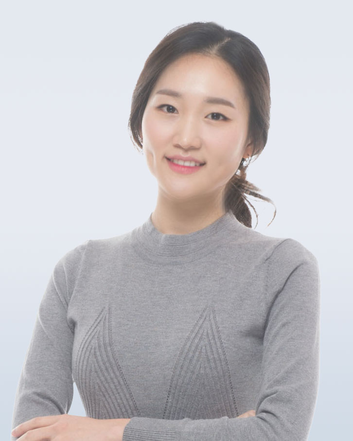

Surim Oh

Welcome to my webpage!
I am a Ph.D. Candidate at University of California, Santa Cruz (UCSC) in the department of computer science and engineering @Baskin School of Engineering, advised by Prof. Heiner Litz. I am a member of UCSC's Hardware Systems Collective (HSC).
My research focuses on computer architecture and systems, with a particular emphasis on CPU frontend and instruction prefetching in modern processors for datacenter workloads with large instruction footprints. I have gained valuable experience through internships at Meta and Akeana.
Prior to joining UCSC, I worked as a software engineer at SAP Labs Korea and Hyundai Motor Company. I hold a master’s degree in computer science and engineering from Seoul National University (SNU) and an undergraduate degree in computer science and engineering from Sogang University.
Contact: soh31@ucsc.edu
[GitHub] [Linkedin] [Google Scholar] [CV]
Last update: Nov 3, 2024.
Microarchitecture Simulation
Scarab CPU simulator used in UDP paper, [GitHub]
Scarab Simulation Infrastructure including datacenter workloads [GitHub]
Publications
2024
[HotInfra'24] Surim Oh, Eric Qin, Yang Yang, Mengchi Zhang, Raj Parihar, Ashish Pandya, "LLM Inference Performance on Chiplet-based Architectures and Systems", for Poster Presentation In The 2nd Workshop on Hot Topics in System Infrastructure (HotInfra) Co-located with SOSP 2024, Austin, USA, November 2024. [pdf] [slides]
[ISCA'24] Surim Oh, Mingsheng Xu, Tanvir Ahmed Khan, Baris Kasikci, Heiner Litz, "UDP: Utility-Driven Fetch Directed Instruction Prefetching", In Proceedings of the 51th International Symposium on Computer Architecture (ISCA), Buenos Aires, Argentina, July 2024. [pdf]
- Talks at Intel and ARM [slides]
2020 and older
[TPDS'20] Younghyun Cho, Surim Oh, and Bernhard Egger, "Performance Modeling of Parallel Loops on Multi-Socket Platforms using Queueing Systems", In IEEE Transactions on Parallel and Distributed Systems (TPDS), February 2020.
[M.S. Thesis] Surim Oh, "Hierarchical Manycore Resource Management Framework using Control Processors, Seoul National University, February 2017.
[MULTIPROG'17] Younghyun Cho, Surim Oh, and Bernhard Egger, "Cooperative Parallel Runtimes for Multicores", Presented at the 10th International Workshop on Programmability and Architectures for Heterogeneous Multicores, Stockholm, Sweden, Januray 2017
[PACT'16] Younghyun Cho, Surim Oh, and Bernhard Egger, "Online Scalability Characterization of Data-parallel Programs on Many Cores", In Proceedings of the 26th International Conference on Parallel Architectures and Compilation Techniques, Haifa, Israel, September 2016.
[CATC'16] Surim Oh, Younghyun Cho, and Bernhard Egger, "Efficient Resource Management for Many-cores with Centralized L2 Caches using Distributed Control Processors", Presented at the 7th Compiler, Architectures and Tools Conference, Haifa, Israel, September 2016.
[JSSPP'16] Younghyun Cho, Surim Oh, and Bernhard Egger, "Adaptive Space-shared Scheduling for Shared-memory Parallel Programs", Presented at the 20th Workshop on Job Scheduling Strategies for Parallel Processing, Chicago, USA, May 2016. In Lecture Notes in Computer Science (LNCS), Volumne 10353, pp. 158-177, July 2016.
Service
Artifact Evaluation Committee Member for International Symposium on Architectural Support for Programming Languages and Operating Systems (ASPLOS'25)
Education
Ph.D. in Computer Science and Engineering, University of California, Santa Cruz, Sep 2020 - present
M.S. in Computer Science and Engineering, Seoul National University, Feb 2015 - Feb 2017
B.S. in Computer Science and Engineering, Sogang University, Feb 2011 - Feb 2015
Teaching
As teaching assistant roles at University of California, Santa Cruz
- CSE120, Computer Architecture, Fall 2023, Winter 2023, Fall 2021
- CSE220, Advanced Computer Architecture, Fall 2024
As teaching assistant roles at Seoul National University
- 4190.308*, Computer Architecture, Spring 2016, Fall 2015
Award
[SnuMAP] Younghyun Cho, Camilo A. Celis Guzman, Heesik Shin, Surim Oh, 2nd Prize, in Open Source Software World Challenge 2016, Seoul, South Korea, December 2016. [GitHub]